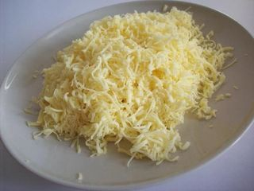
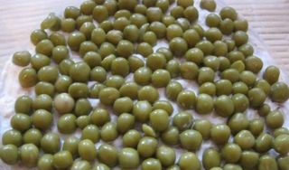
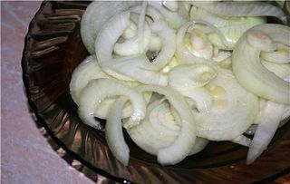
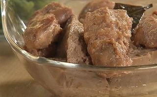
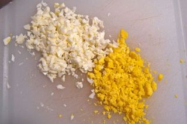

Шаг 1: Натираем сыр.

Первоначально трем на средней терке твердый сыр и укладываем его на дно салатника. Внимание! Это слоёный салат, поэтому все продукты следует выкладывать в определенной последовательности.
Шаг 2: Выкладываем горошек.

За сырным слоем следует слой консервированного зеленого горошка (из которого обязательно нужно слить всю жидкость!), который смазываем майонезом.
Шаг 3: Выкладываем маринованный лук .

Третьим слоем салата является лук. Рецепт маринования этого овоща есть практически у каждой хозяйки. Мы советуем замариновать порезанный колечками лук за несколько часов до готовки, или с вечера. Для этого берут 4 ложки кипяченой воды, одну десертную ложку столового уксуса и чайную ложку сахарного песка, смешивают с нарезанным луком и оставляют настаиваться в холодильнике.
Шаг 4: Выкладываем печень трески.

Четвертым слоем салата «Айсберг» являются очень тщательно измельченные вилкой консервы - печень трески.
Шаг 5: Варим и измельчаем яйца.

Яйца варить нужно в подсоленной воде в течении 15 минут на среднем огне. Затем положите их в холодную воду на 5 минут, чтобы скорлупа легко отделилась. Почистите их. Затем у вареных яиц отделяем белки от желтков. Трем желтки в мелкую терку, посыпаем ими салат и промазываем майонезом, то же самое проделываем и с белками. Салат готов к употреблению!